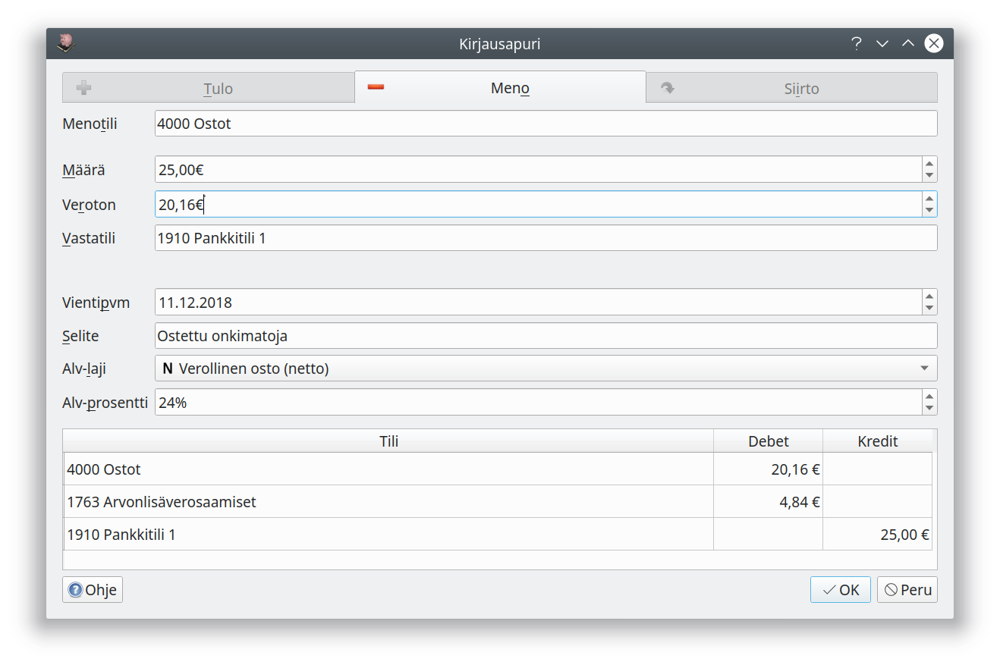
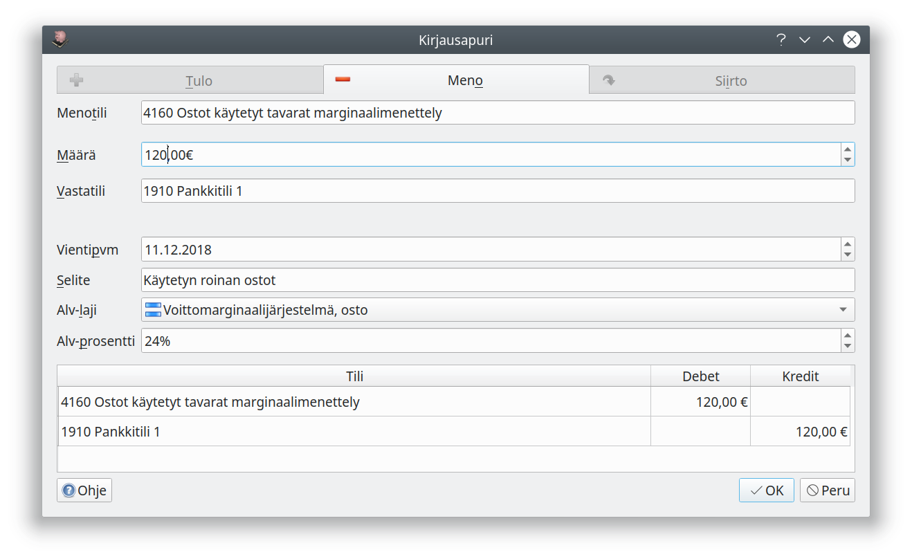
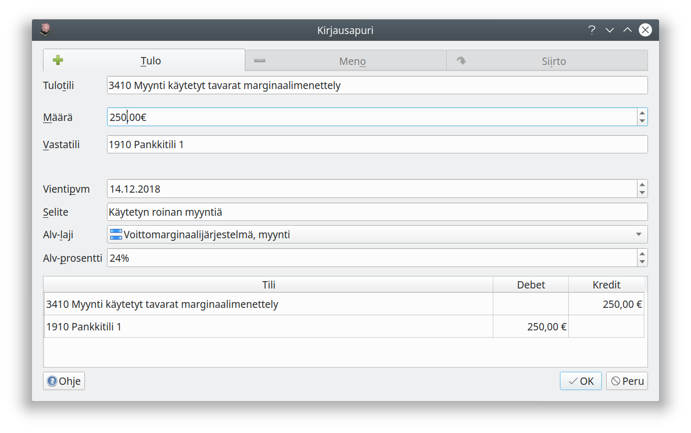
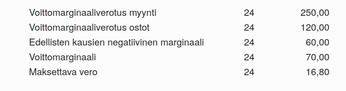
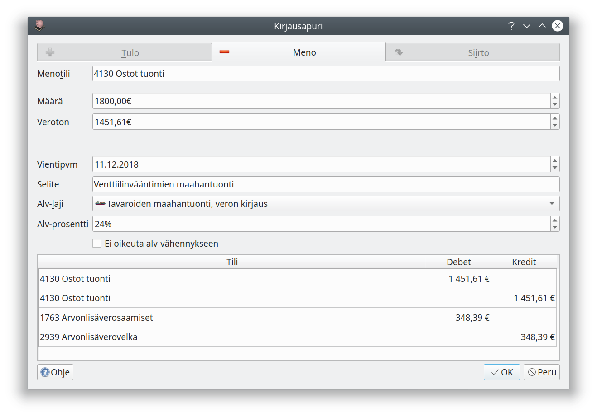
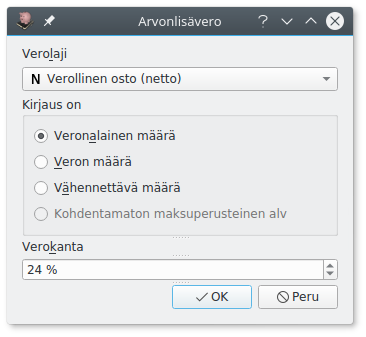

Ohjelmasta on ilmestynyt uusi versio nimellä Kitsas
Kitupiikin tuki päättyy vuoden 2021 aikana. Suosittelemme siirtymistä Kitsaaseen viimeistään tilikauden vaihtuessa.
Ohjelma on edelleen ilmainen, kun kirjanpito tallennetaan omalle tietokoneelle. Kitsaaseen on saatavilla myös maksullisia lisäpalveluita.
kitsas.fiArvonlisäveron mallikirjaukset¶
Kaikki arvonlisäverolliset kirjaukset kannattaa aina tehdä Kirjausapurilla. Huomaa, että verokäsittelyn kannalta ei ole olennaista, mille tilille kirjaus tehdään, vaan että kirjaukselle määritellään oikein arvonlisäveron valinnat!
Kirjausapuri muodostaa Kirjausapurin ruudun alalaidassa olevan kirjausehdotuksen automaattisesti, kun käyttäjä on tehnyt oikeat arvonlisäveroon liittyvät valinnat (alv-laji ja alv-prosentti).
Kitupiikki muodostaa tulokirjaukset myös Kitupiikin laskutuksella laadituista laskuista kaikille laskutuksessa valittavissa oleville arvonlisäverolajeille.
Kotimaan ostot¶

Nettokirjausmenettelyssä arvonlisäveron osuus kirjataan erikseen alv-saamisiksi. Voit syöttää kohtaan Määrä verollisen kokonaismäärän tai kohtaan Veroton verottoman nettomäärän.

Bruttokirjausmenettelyssä ostotilille kirjataan verollinen määrä, ja vasta arvonlisäveroilmoitusta laadittaessa veron osuus siirretään alv-saamiksiksi.
Kotimaan myynti¶

Nettokirjausmenettelyssä arvonlisäveron osuus kirjataan arvonlisäverovelkaan. Voit syöttää kohtaan Määrä verollisen kokonaismäärän tai kohtaan Veroton verottoman nettomäärän.

Bruttokirjausmenettelyssä myyntitilille kirjataan verollinen määrä, ja vasta arvonlisäveroilmoitusta laadittaessa veron osuus siirretään alv-velaksi.
Veroton myynti¶

Alv-lajia Veroton käytetään verottomaan myyntiin (esim. terveydenhuoltopalvelut) tai kun myyjä ei ole alv-velvollinen. Nollaverokannan alainen myynti koskee erikseen määriteltyjä tilanteita, joissa myynnistä ei suorita veroa, mutta hankinnoista saa vähentää arvonlisäveron.
Verottomat ostot¶
Alv-lajia Veroton käytetään kaikkiin ostoihin, joista ei voi tehdä alv-vähennystä.
Marginaaliverotusmenettely¶
Marginaaliverotusmenettelyssä vero maksetaan ainoastaan voittomarginaalista. Kitupiikki tukee Verohallinnon ohjeessa kuvattua yksinkertaistettua menettelyä.1.3Kitupiikin versiosta 1.3 lähtien


Kitupiikki laskee alv-ilmoitusta tehtäessä verokauden voittomarginaalin. Voittomarginaalilaskelma löytyy alv-erittelyn loppupuolelta.

Tavarakohtaisessa menettelyssä tulee tavaraa myytäessä kirjata tavaran ostohinta verottomaksi ja voittomarginaali verolliseksi (esimerkiksi käynnistämällä Kirjausapuri kaksi kertaa samaa tositetta kirjattaessa.)
Rakennusalan käännetty arvonlisäverovelvollisuus¶


Valintaa Ei oikeuta alv-vähennykseen käytetään silloin, jos ostaja ei ole oikeutettu tekemään alv-vähennystä (esimerkiksi henkilöstön virkistysmökin kunnostaminen).
Yhteisöhankinnat¶

Maksettu määrä kirjataan kohtaan veroton, ja alv-prosentti on suomalaisen arvonlisäveron prosentti.
Yhteisömyynti¶

Yhteisömyynnissä ostaja maksaa arvonlisäveron. Myyjän tulee antaa myös kuukausittainen yhteenvetoilmoitus.
Maahantuonti¶

Maahantuonnin arvonlisävero ilmoitetaan kausiveroilmoituksessa. Ostolaskun yhteydessä kirjaus tehdään valinnalla Tavaroiden maahantuonti EU:n ulkopuolelta. Jos ostolasku on jo kirjattu verottomana, voidaan tullauspäätös kirjata myöhemmin valinnalla Tavaroiden maahantuonti, veron kirjaus
Kirjaaminen ilman kirjausapuria¶
Ilman Kirjausapuria kirjattaessa verolaji ja -prosentti on valittava erikseen. Ole huolellinen!

- Veronalainen määrä tarkoittaa arvonlisäveron perustetta. Bruttokirjauksessa summa kirjataan alv-tiedolla Verollinen myynti(brutto) ja veronalainen määrä. Nettokirjauksessa tähän kirjataan veroton (netto)summa.
- Veron määrä tarkoittaa maksettavaa arvonlisäveroa: nettokirjauksessa tähän kirjataan maksettava vero eli brutto- ja nettosummien erotus.
- Vähennettävä määrä tarkoittaa ostojen kirjauksessa arvonlisäverosta vähennettävää määrää.
- Kohdentamaton maksuperusteinen alv tarkoittaa maksua odottavaa veroa